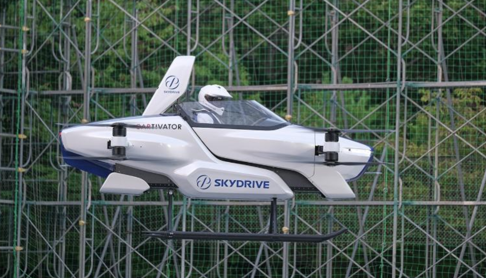

Arpitha Vinod arpithav@teenhacksli.com
Alice Liu aliceliu@teenhacksli.com
Is traffic ever so bad you just wished for teleportation powers so you don’t have to be late again ? Well, here is a better alternative: fly your car to your desired destination! While that might seem like an innovation of the future, a Japanese tech company, Sky Drive Inc. , recently tested a successful run of their manned flying car.
Sky Drive was established in 2018 from the original volunteer group Cartivator , receiving most of its funding from the Development Bank of Japan. On August 25, the startup flew its current model: the SD-03— the smallest electric vertical take off and landing ( eVTOL ) machine. Flying around the 2.5 acre Toyota Test Field , the car lifted about 10 feet in the air for a whopping four minutes . While a one-manned pilot was in control of the vehicle, the pilot was also aided by a computer system to ensure safety.
The SD-03 takes the space of about two parked cars— the aircraft/car is about 6.5 feet high and 13 feet in length and width. It has one seat, eight motors, multiple headlights and taillights, red lights on the bottom, and two propellers on each corner. While the prototype that was tested is a single seater, the company hopes to eventually make the vehicle have two seats in hopes of replicating an air taxi service. Analysts with Morgan Stanley, an investment banking company, predict that urban air taxis could be a thing by 2040, with the market increasing to approximately $2.9 trillion by then .
“We want to realize a society where flying cars are an accessible and convenient means of transportation in the skies and people are able to experience a safe, secure, and comfortable new way of life”, says CEO of Sky Drive, Tomohiro Fukuzawa. Other companies like Boeing and Airbus are also working on flying cars, but SkyDrive says that they intend on launching the flying car commercially by 2023. Of course, many more tests still need to be completed in order to ensure that the flying car meets safety and design standards.
While sky travel could very much be a thing in the coming years, there are still some issues to address. For instance, the vehicle needs to be strong enough to carry weight while still being able to fly at low altitudes. Also, the question of energy efficiency of this mode of transportation and the development of proper self autonomous technology must also be considered. So if you don’t have your driver’s license yet, don’t fret—you needn’t stress about doing your Drivers Ed test in the sky just yet.